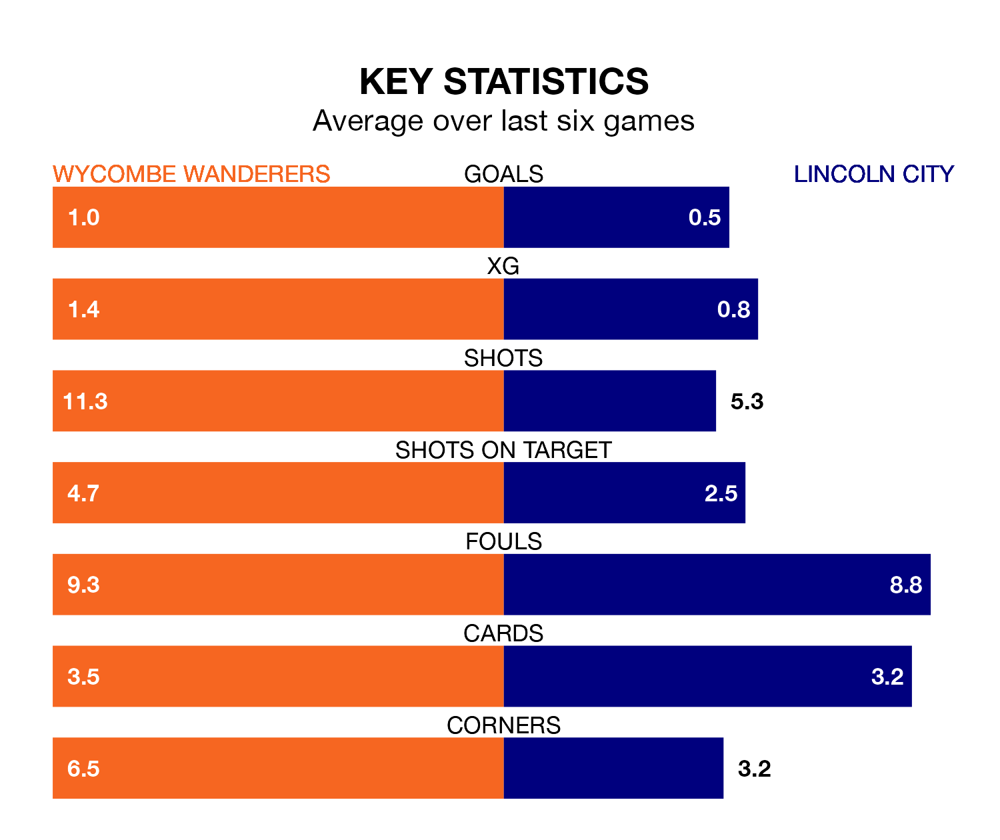

Lincoln City come to Adams Park to play Wycombe Wanderers on Saturday in terrible form, having collected just two points from their last six games.
The visitors have drawn two and lost four of their last six fixtures, while the Chairboys have a win and four draws.
With 29 goals in 26 games so far this season, Lincoln are scoring at below the league average rate with 1.1 goals per game. But they are conceding fewer than average too, letting in 29 goals at a rate of 1.1 per game.
Wycombe are also below average scorers, with 1.2 goals per game, compared to a league average of 1.3. They have conceded 1.4 goals per game.
Wanderers are 17th in the table after 25 games, of which they have won seven and drawn eight, earning 29 points.
City are five places ahead of the Chairboys in 12th, with eight wins and eight draws putting them on 32 points.
In the last five years, Wycombe and Lincoln have played each other on six occasions. They won two each, and they drew twice.
On average, the Chairboys scored 0.8 goals and the Imps 1.2 in those matches.
Their last meeting was on August 12, when Lincoln won 3-0 at home.
Wycombe's last match was on January 6, a 1-1 draw against Burton Albion, with Sam Vokes getting the goal for the Chairboys.
Lincoln lost 2-0 against Blackpool last time out, on January 1.
Updated: 11:31, 09/01/24